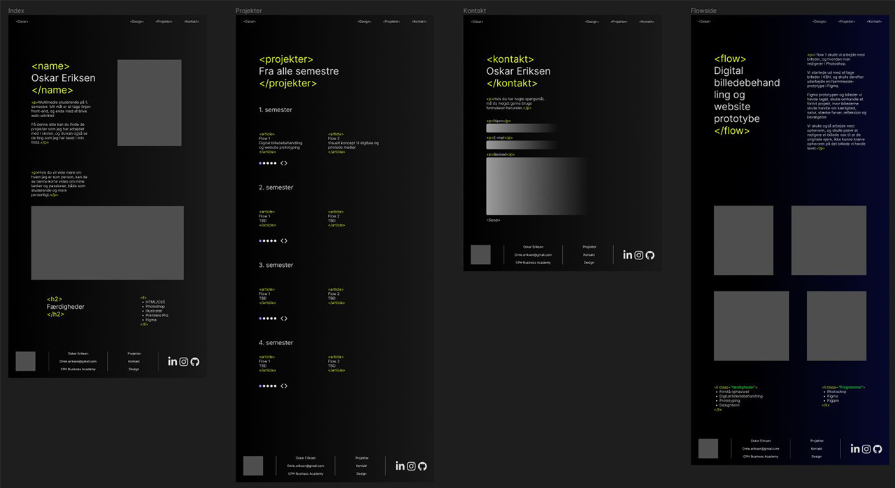
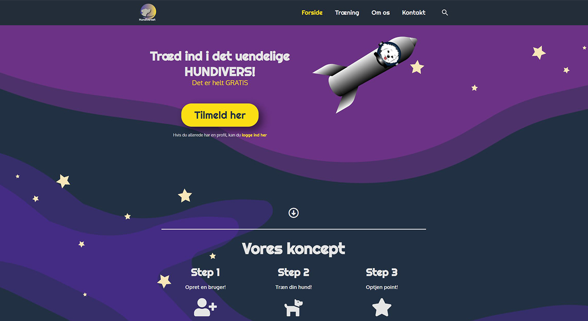
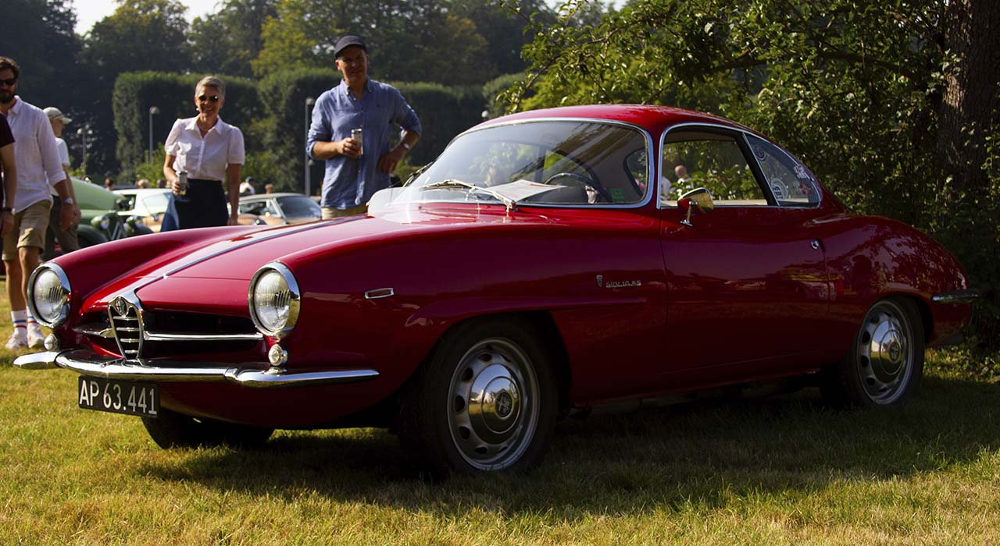
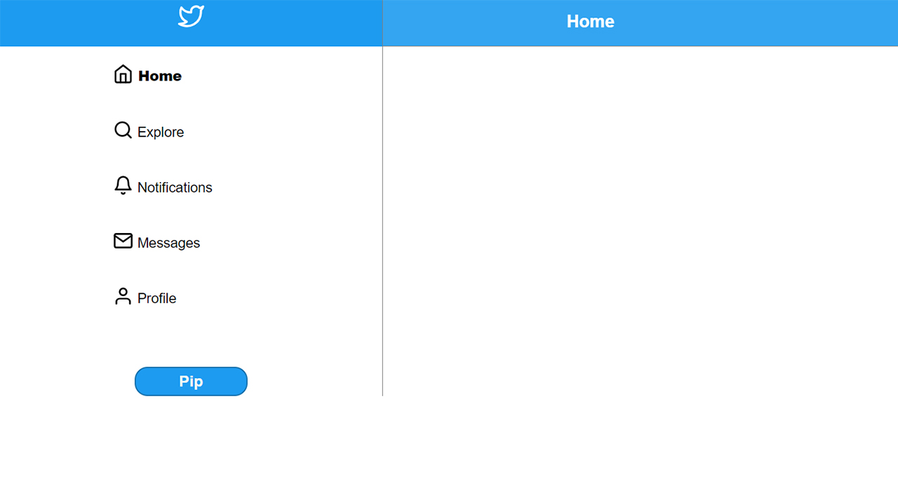
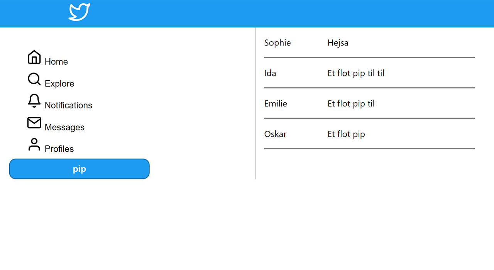

Eksamensprojekt1
Designet og kodet portfolio til første eksamen.
Projektet blev lavet individuelt
Projektet
- Design af portfolio
- Udarbejdelse af videobeskrivelse af mig selv
- Designguide der begrunder designvalg
- Ikke tilladt at bruge et CMS, bootstrap eller frameworks
Projektet blev lavet i 1. semester som afslutning.

Eksamensprojekt2
Designe og oprette en hjemmeside med formålet at involvere brugeren
Projektet blev lavet i grupper af 4
Projektet
- Design af hjemmeside
- Producere flere videoer inkl. pre og post produktion
- Skrive simple PHP og JavaScript
- Bruge wordpress til at producere siden
Projektet blev lavet i 2. semester som afslutning.


Twitter 2.0
Lave en "kopi" af twitter kaldet pipper
Projektet blev lavet i grupper af 3
Projektet
- Bruge PHP og MySQL til at hente og gemme data i en DB
- Arbejde med JavaScript så man kan oprette "Pips" direkte fra siden
- Et design der nogenlunde kopier Twitter
Projektet blev lavet som første projekt i 3. semester

React Pipper
opdaterer pipperprojektet til at bruge React.js
Projektet blev lavet i grupper af 3
Projektet
- Bruge samme design fra Twitter 2.0 til dette projekt
- Arbejde med React.js men bibeholde funktionerne fra tidligere projekt
- Lave komponenter som indeholder forskellige funktioner
Projektet blev lavet i forlængelse af tidligere Twitter 2.0 projekt